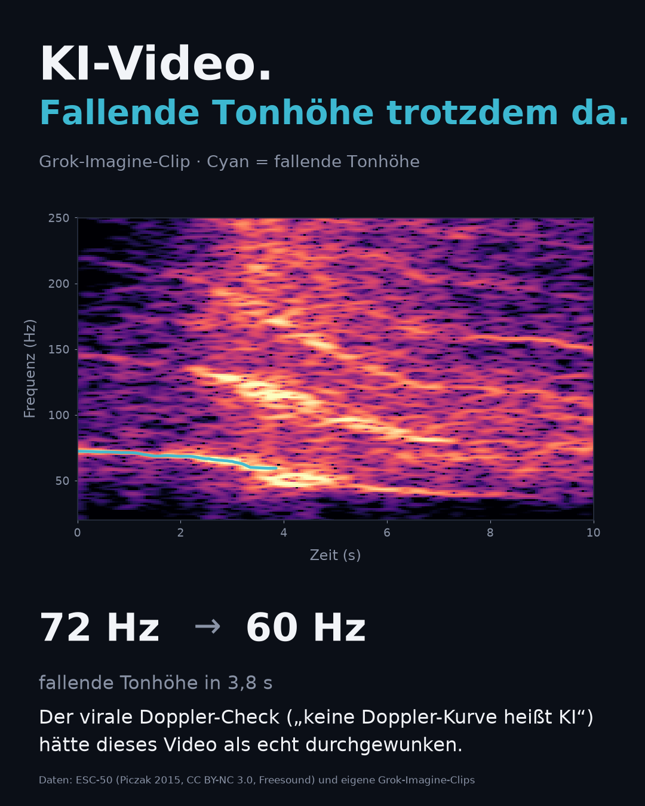
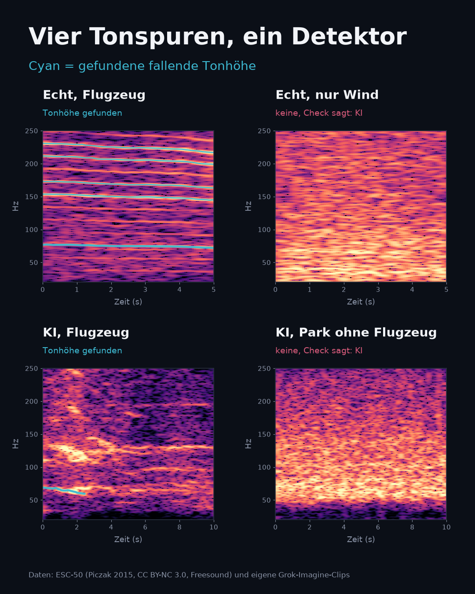

A rule spread on X that month: a video with no low-frequency airplane Doppler curve is AI-generated. The counts below are from one falling-ridge detector, twenty Grok Imagine clips, and the ESC-50 airplane recordings. A hit is a falling ridge. It is not, by itself, a fly-by.
The rule does not hold on this set. Four of the ten generated clips that were asked for an airplane contain a falling ridge, so the rule would call them real. Thirty of the forty real airplane recordings contain no such ridge, so the rule would call them AI.
| Set | Clips | Falling ridge | Steady harmonics |
|---|---|---|---|
| Grok Imagine, airplane in the prompt | 10 | 4 | 1 |
| Grok Imagine, no airplane | 10 | 0 | 0 |
| ESC-50, airplane | 40 | 10 | 7 |
| ESC-50, no airplane, held out from tuning | 80 | 3 | 0 |
Read the way the rule reads, “no falling ridge means AI”:
The flag is the falling ridge alone. The physics checks do not change it, so a straight pitch glide passes. Ratio speeds and fly-by fits are in the per-clip table and are not a result. The two estimators disagree, and four fits sat on the optimizer ceiling of 300 m/s. Those four are unidentified.
| Clip | Start | End | Length | Steady harmonics |
|---|---|---|---|---|
p01 | 72 Hz | 60 Hz | 3.85 s | 1 |
p03 | 44 Hz | 41 Hz | 1.5 s | 0 |
p05 | 68 Hz | 61 Hz | 2.45 s | 0 |
p10 | 137 Hz | 130 Hz | 3.3 s | 0 |
p01 is the one with a harmonic pair at a steady ratio of about 2. The other three generated hits are a single falling ridge. The prompts for p01, p05, and p10 say the engine sound is “rising and falling”. The prompt for p03 says the engine grows louder and then fades. Six of the ten airplane prompts use that rising-and-falling phrase.
The three real false positives are a rain clip, a birds clip, and a thunder clip (2-73260-A-10, 3-155579-A-14, 2-39945-A-19). Each is a short ridge just past a 3% drop, with no harmonic pair, and a fly-by fit on the 300 m/s ceiling.

p01, the longest generated track. The footer credits ESC-50 because that is the project-wide data line; this panel itself is generated audio.

1-43807-A-47). Its fly-by fit sat on the 300 m/s ceiling and is unidentified. The panel shows the ridge.
Top right, “Echt, nur Wind / keine, Check sagt: KI”: real wind only, and the check says AI (2-109371-A-16).
Bottom left, “KI, Flugzeug / Tonhöhe gefunden”: generated airplane, falling pitch found (p05).
Bottom right, “KI, Park ohne Flugzeug / keine, Check sagt: KI”: generated park with no airplane, and the check says AI (n01).
The panels are the ones the figure code picks: longest tracks, then a wind clip, then the generated hit with the best fly-by R² after the hero. They are examples, not a random draw.
This figure contains ESC-50 spectrograms, so it is CC BY-NC 3.0, Piczak 2015, Freesound.
Audio is decoded to mono at 44.1 kHz. The spectrogram runs from 20 to 250 Hz. The bin is 1.35 Hz, the window is 0.74 s, and the hop is 50 ms, so neighboring frames overlap by about 93%. A track counts when it lasts at least 1.5 s, falls monotonically, drops by at least 3% from start to end, and stays smooth (jitter at most 0.4 Hz). That ridge is the rule. The harmonic check and the fly-by fit do not change the flag. The harmonic check asks whether two tracks keep a constant frequency ratio, which a single moving source does to all of its harmonics, and which a source whose pitch simply glides does too. Every threshold is in config.toml in the repository. The detector was tuned by hand. Files 1 to 10 of each non-airplane class are left out of the counts. The airplane count is not held out: all 40 clips are in it. In sorted filename order the first 10 contain 3 of the 10 airplane hits, and the other 30 contain 7.
The code, the per-clip table, the prompts, and the sha256 of each generated file are in the repository. The ESC-50 audio and the twenty videos are not. ESC-50 is downloaded from its own repository by the fetch step. The generated files go in data/ai/ under the names in the manifest, and the run stops if a checksum differs.
The claim this measures is Adam Holter’s thread, shared by Pierre Beyssac in this post. Holter’s figure already says that a low-frequency curve alone does not establish a recorded aircraft. The underlying idea is @0x45o’s geolocation of videos through aircraft Doppler.